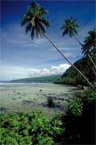
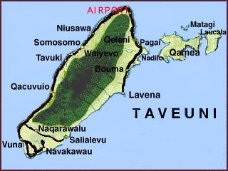
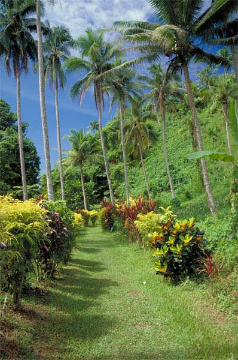
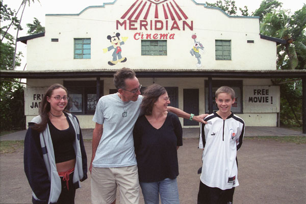
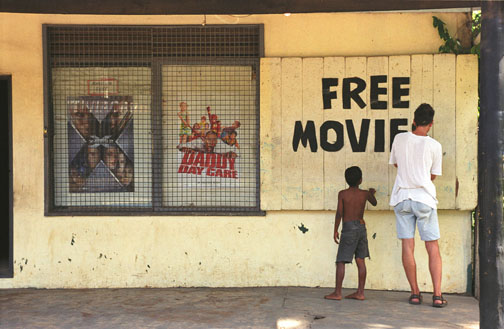
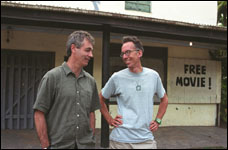
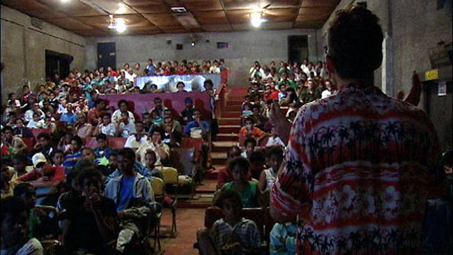

Rob Kay's Fiji Guide - Taveuni
The Piersons on 'Reel Paradise'
BY ROB KAY
Taveuni (pronounced Tah-vee-ew-nee), the garden island of Fiji, is rugged,
wet, verdant and pristine. It lies only seven kilometers off the southeast
coast of Vanua Levu and is 42 kilometers long and averages about 11 kilometers
wide. Taveuni is a archetypically beautiful tropical island, thick with
vegetation and resplendent with tropical flowers. It offers the visitor
a rich natural history, in particular, a fine
array of birdlife. Fortunately (unlike other island in the Fiji archipelago)
the mongoose was never introduced to Taveuni and consequently many of the
birds that have vanished on Viti Levu and Vanua Levu still thrive on the
Garden Island. Once the home of fierce warriors, Taveuni residents still
exude pride and confidence in their step.

With a population of around 12,000 inhabitants, Taveuni is sparsely populated.
Virtually all of whom live in traditional Fijian villages and are quite
hospitable. Once known for its coconut plantations, Taveuni's attractions
include world class diving. (Photo at left and below courtesy of Paddy Ryan.)
According to Undercurrent, a prestigious dive magazine, "Taveuni has great diving but it's terrible for beginners; there's high current velocity damn near daily. Bring a compass, and carry both day and night emergency surface signaling devices (tubes, strobes).... This is a good area for sea snakes, soft corals, stonefish, and clown fish....
In addition to underwater attractions the terrestrial displays are signficant--there aer water falls, and an array of rare, indigenous
flora and fauna. Taveuni has a number of excellent low and mid-ranged accommodations.
The island can be reached via air from Nadi or Suva or on a local ferryboat.

The latest trends in Taveuni mirror those occurring elsewhere in Fiji:
- A real estate boomlet fueled by Americans, Germans and others purchasing choice freehold land on the island.
- An increasingly sophisticated tourist plant that features everything from F$25 backpacker hostels and excellent bungalows in the $US120-160 range to 5 Star US$900/per night boutique resorts.
- The newest property under construction is the

eco-friendly Nakia Resort. Former Hawaii residents Jim and Robin Kelley are constructing this self-sustaining resort 6 km from Taveuni’s airport. They intend it to be Fiji’s first hotel powered by alternative energy sources such as solar and wind power. Slated for completion in June ’06, it will cater to families and will have 4 bures in the US$180-250 range (including meals). Located on a bluff overlooking the sea, it reportedly has great views and it’s own artesian spring. Nakia will provide guests with organically grown fruits and vegetables. For more info contact them at jimandrobinfiji@hotmail.com
Then there's Hollywood's interpretation of the island...

To see that, check out Reel Paradise, a movie about the saga of American film maker maker John Pierson who in 2002 relocated his family (see photo at right) to Taveuni for a year to show free movies at the venerable Meridian Cinema near Waiyevo. This is the Fiji that the Fiji Visitors Bureau doesn't publicize. I would definitely rent this flick (not so much to see the inner workings of the Pierson family) but to see a raw slice of Fijian life. I've always thought that just about everyone in Fiji is a living institution worthy of a bit part in a film and Reel Paradise captures it all--from the good  hearted Fijian cook to the drunken, half wit "local European" landlord. (Let's not forget the self-righteous priest worried about cultural contamination from the American interlopers). The warts and all are there for the world to see about the Pierson family and some facets of Fijian life. However, it's by no means a negative film. There's plenty to like about the verite aspects of this film. Three cheers for no phony sentimentality about the "noble savage".
There's plenty of dirty laundry aired but it's equally distributed among the Piersons and the Fijians. John and Janet Pierson are not to be confused with Ozzie and Harriet Nelson nor are their Fijian neighbors always perfect  models of propreity.
The director doesn't do anyone any special favors, he simply tells the story of a American family transplanted in the backwaters of Waiyevo. Nobody is perfect around here but despite the occasional crime and misdemeanor people are pretty damn civil and their their good qualities shine through.
At the end of the film the Piersons' sit, cross-legged, Fiji-style at a good bye party given by the local village in their honor and drink kava. The couple proclaim what they've learned after being in country for a year --that Fiji  may be poor in material wealth but is incredibly rich in heart. Indeed, more heart than you're ever likely to find in Hollywood.
If you click on the Reel Paradise link above you'll be able to see a trailer of the film. Photo above is of director Steve James (on left) flanked by his subject, John Pierson. Photo at right is the inside of the Meridian Cinema. (Photos courtesy of photographer Amy C. Elliott and the Reel Paradise crew).
More Press...
|